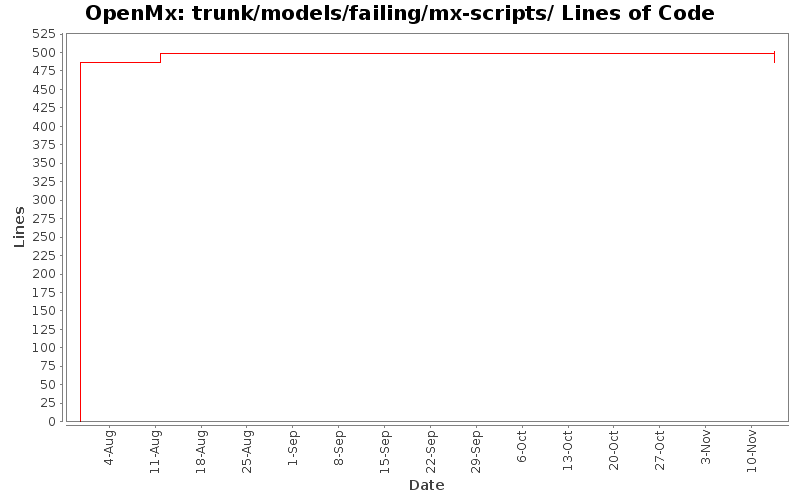

[root]/trunk/models/failing/mx-scripts

| Author | Changes | Lines of Code | Lines per Change |
|---|---|---|---|
| Totals | 13 (100.0%) | 514 (100.0%) | 39.5 |
| tbrick | 9 (69.2%) | 487 (94.7%) | 54.1 |
| mneale | 3 (23.1%) | 25 (4.9%) | 8.3 |
| mspiegel | 1 (7.7%) | 2 (0.4%) | 2.0 |
Cleaning up some formerly failing scripts
0 lines of code changed in 1 file:
Adding passing/acemix.R, probabilistic zygosity diagnosis example using FIML mixture distribution
14 lines of code changed in 1 file:
Changed data file extention to ".txt" so it will be ignored by subversion statistics tracker
2 lines of code changed in 1 file:
added trunk/models/failing/UnivariateTwinAnalysisModerated_Matrix.R which has same parameter estimates but different -2lnL c/w Mx1 version in mx-scripts
11 lines of code changed in 1 file:
More models corrected and old Mx scripts added. This time, MultipleRegression*, MultivariateRegression*, and SimpleRegression*. Still need double-checking before being moved to models/passing.
243 lines of code changed in 5 files:
Corrected a transposed A matrix in the Autoregressive_* models. The transposed versions are kept in Autoregressive_Transpose_*. Added correct output numbers (from old Mx) to several models. Mx scripts to verify these are in mx-scripts directory. R scripts should be re-checked for suitability as documentation.
244 lines of code changed in 4 files: